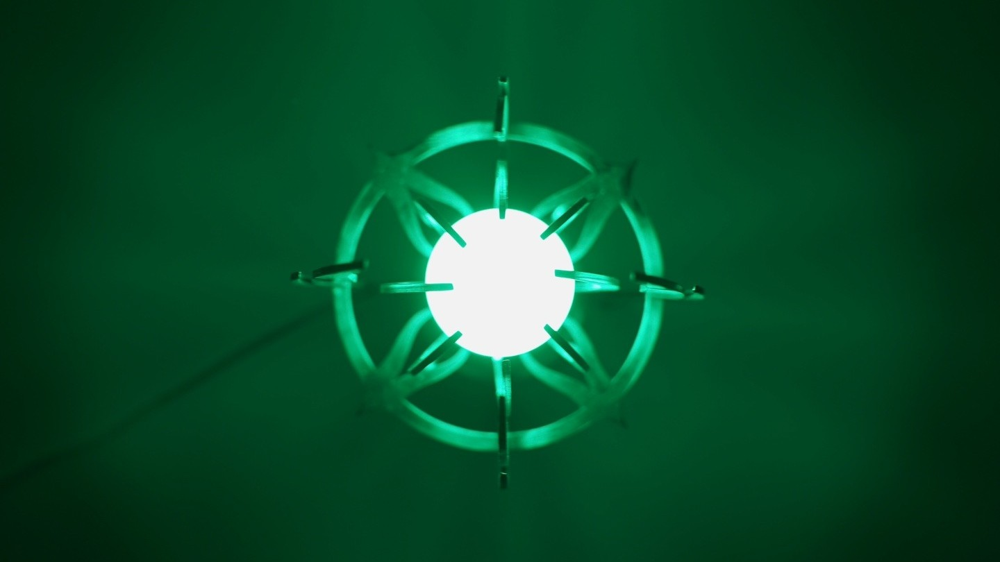
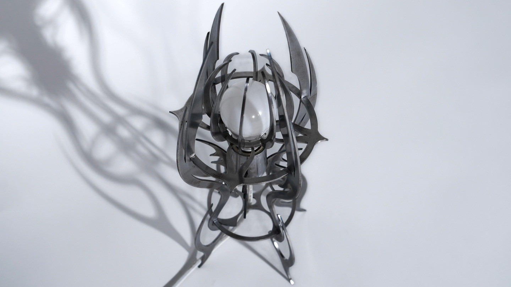
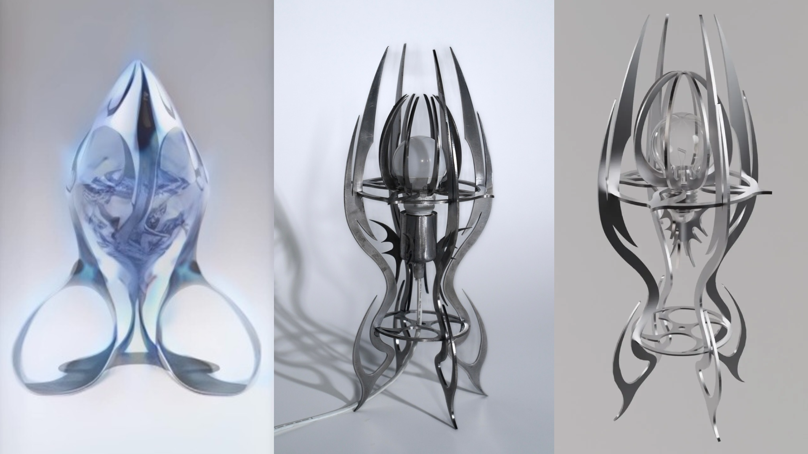
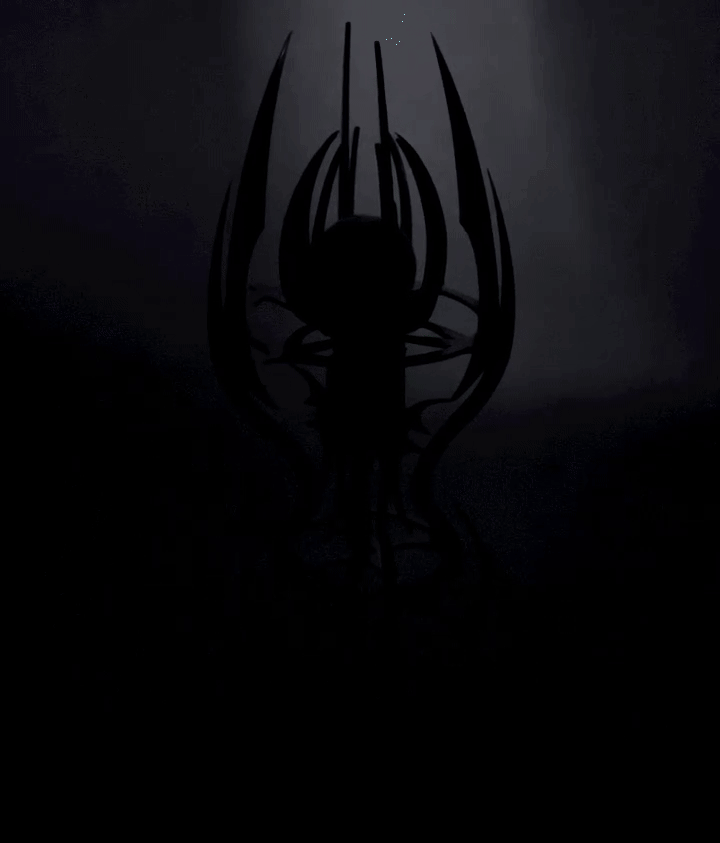

Oxydoom
The light objects developed for Oxydoom: Shattered Equilibrium, sculptural artifacts within the project's expanded mythological world. The original narrative is into a symbolic exploration of collapse, transformation, and belief. The light object appears as a powerful religious motif that marks a turning point in the original arc.



